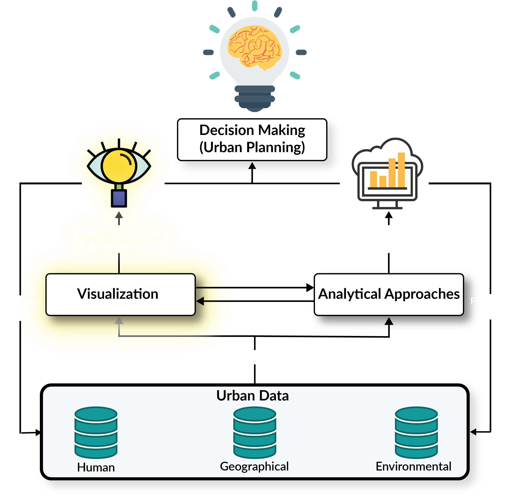

Interactive & 3D Visual Explorations of the Human-Urban Form
Garrett C. Millar

Papers
- Visualization
- StreetVizor: Visual Exploration of Human-Scale Urban Forms Based on Street Views [Shen et al., 2018]
- Analytical Approaches
- Voila: Visual Anomaly Detection and Monitoring with Streaming Spatiotemporal Data [Cao et al., 2017]
- Future Methods & Visualizations
- Interactive 3D Visual Analysis of Atmospheric Fronts [Kern et al., 2018]
Presentation Format
- Central problem?
- Why is it important?
Presentation Format
- Central problem?
- Why is it important?
- Knowledge gap
- What gaps are being addressed and why?
Presentation Format
- Central problem?
- Why is it important?
- Knowledge gap
- What gaps are being addressed and why?
- Research objectives / questions
Presentation Format
- Central problem?
- Why is it important?
- Knowledge gap
- What gaps are being addressed and why?
- Research objectives / questions
- Methods (variable)
Presentation Format
- Central problem?
- Why is it important?
- Knowledge gap
- What gaps are being addressed and why?
- Research objectives / questions
- Methods (variable)
- Final product
Presentation Format
- Central problem?
- Why is it important?
- Knowledge gap
- What gaps are being addressed and why?
- Research objectives / questions
- Methods (vary)
- Final product
- Conclusions

StreetVizor: Visual Exploration of Human-Scale Urban Forms Based on Street Views
StreetVizor: Visual Exploration of Human-Scale Urban Forms Based on Street Views
Identification of Problems
StreetVizor: Visual Exploration of Human-Scale Urban Forms Based on Street Views
Identification of Problems
- Central problem?
- Why is this important?
StreetVizor: Visual Exploration of Human-Scale Urban Forms Based on Street Views
The Knowledge Gap
- Previous work mainly focuses on either a particular feature or a small area
- Limits its applicability in urban planning, where planners need to:
- quantitatively measure multivariate features of urban forms
- systematically explore urban forms in areas-of-interest (AOIs) at multiple scales
StreetVizor: Visual Exploration of Human-Scale Urban Forms Based on Street Views
Research Objectives
- Authors' propose:
- fully automatic approach measuring human-scale urban forms
- visual comparison framework for exploring human-scale urban forms on multiple scales
- novel visual design of parallel coordinates integrating street layout information
StreetVizor: Visual Exploration of Human-Scale Urban Forms Based on Street Views
Methods: Design Process
- Structured interviews with senior researcher in urban design identifying 3 main analysis criteria:
- Multivariate Features
- Street View Crawling
- Street View Directions
- Experiment with few representative cities: HongKong, Singapore, London, & NYC
StreetVizor: Visual Exploration of Human-Scale Urban Forms Based on Street Views
Methods: Design Process
- Developed questions for system to address:
- How are the identified features distributed in AOI?
- What are the feature differences between AOIs?
- What exact views can people see on a street?
- Are there any representative views?
- Based on these questions, compiled list of Design Rationales:
- Overview + Details
- Coordinated Multiple Views
- Effective Comparison
- Visual Consistency
StreetVizor: Visual Exploration of Human-Scale Urban Forms Based on Street Views
Methods: System Framework
- A web-based application comprising two major phases:
- Data modeling phase
- Interactive visual exploration
phase:
- Ranking Explorer
- AOI Explorer

StreetVizor: Visual Exploration of Human-Scale Urban Forms Based on Street Views
Methods: Data Processing & Modeling
StreetVizor: Visual Exploration of Human-Scale Urban Forms Based on Street Views
Methods: System Framework
- User Interactions
- Multi-scale Navigation
- Feature Filtering
- Details on Demand
- Linking

StreetVizor: Visual Exploration of Human-Scale Urban Forms Based on Street Views
User Interface
StreetVizor: Visual Exploration of Human-Scale Urban Forms Based on Street Views
Final Thoughts
Voila: Visual Anomaly Detection and Monitoring with Streaming Spatiotemporal Data
Voila: Visual Anomaly Detection and Monitoring with Streaming Spatiotemporal Data
Identification of Problems
Voila: Visual Anomaly Detection and Monitoring with Streaming Spatiotemporal Data
Identification of Problems
- Central problem?
- Why is this important?
Voila: Visual Anomaly Detection and Monitoring with Streaming Spatiotemporal Data
The Knowledge Gap
- Big data is needy
- Visual analytics can fulfill these needs
- Flexible & adaptive
- Rich context information
- But, existing solutions are limited and not properly equipped
Voila: Visual Anomaly Detection and Monitoring with Streaming Spatiotemporal Data
Research Objectives
- Authors propose:
- integrated, visual analytics system
- novel tensor-based anomaly analysis algorithm
- set of novel visualization & interaction designs
Voila: Visual Anomaly Detection and Monitoring with Streaming Spatiotemporal Data
Methods: Framework
- Novel visual interactive framework: Voila
- Suitable for tackling the analysis challenges in detecting and interpreting anomalies in big, spatiotemporal data.
Voila: Visual Anomaly Detection and Monitoring with Streaming Spatiotemporal Data
Methods: System Design Requirements
- Concrete requirements formulated through close collaboration with a domain expert (anomaly detection & spatiotemporal data analysis):
- R1 - Adaptivity: Online monitoring & analysis
- R2 - Interpretability: Multifaceted pattern discovery & anomaly filtering
- R3 - Interactivity: Human in the analysis loop
Voila: Visual Anomaly Detection and Monitoring with Streaming Spatiotemporal Data
Methods: System Overview
System transforms spatiotemporal data into tensor time series & derives & represents abnormal patterns via 4 modules
- Data preprocessing (R1 - Adaptivity)
- Analysis (R1 & 2 - Adaptivity & Interpretability)
- Visualization (R2 - Interpretability)
- Interaction (R3 - Interactivity)
Voila: Visual Anomaly Detection and Monitoring with Streaming Spatiotemporal Data
Methods: Visualization & Interaction
Used Pirolli & Card [2005] sensemaking process model:
- Tasks to support information foraging loop –
- (T1) augment users’ information seeking through overview
- (T2) ranking
- (T3) linking to the raw data
- Tasks to support sensemaking loop –
- (T4) augment users’ conceptualization of normal & abnormal cases through showing patterns in context
- (T5) comparing patterns
- (T6) external memorization
- (T7) incorporate users’ additional judgment to enhance both information foraging & sensemaking loops
Voila: Visual Anomaly Detection and Monitoring with Streaming Spatiotemporal Data
Analytical Approach
Voila: Visual Anomaly Detection and Monitoring with Streaming Spatiotemporal Data
User Interface
Voila: Visual Anomaly Detection and Monitoring with Streaming Spatiotemporal Data
Final Thoughts
Questions?
Thank you!